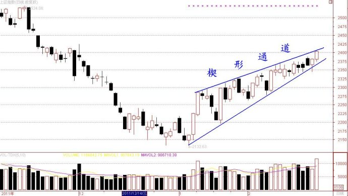

第125篇•凌晨解盘
谷为陵
昨天大盘最大的特点是开始有了放量的迹象，沪市终于突破了千亿元成交额，中表明股市似乎在逐渐转入强势，这是一个非常值得关注的现象。
目前上证指数还处在自1月9日以来的上升通道之中，该通道是一个收窄型或者说楔形通道，昨天上证指数正好触及通道上轨，如下图所示：

由于楔形通道会不断收窄，直至最后上下通道线必定会发生相交。按照目前楔形的形态分析，上下通道线发生相交的时间应该就在10个交易日内，而这恰好是处于“两会”期间。
届时，上证指数就会面临一个突破方向的选择，到底是选择向上还是向下突破呢？我认为，若大盘能够继续放量，那么，大盘至少不会向下突破；若大盘不能够继续放量，那么，消耗性上升的结果将会随时面临突如其来的快速杀跌调整。所以，我们要密切关注大盘的成交量变化，这是最核心的问题。